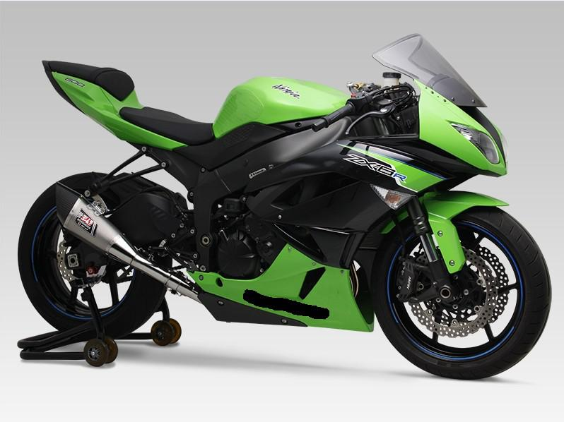

Технические характеристики - KAWASAKI NINJA 600 ZX-6RR
Система запуска: Стартер
Топливная система питания Инжектор
Тип(вид) мотора 4рядн.
Тип мотора 4-х тактный
Наличие центральной подножки Нет
Тип привода колеса Цепь
Коробка передач: мех. 6-х ступч.
Тормоза передние 2х дисковые
Тормоза задние Диск
Тип передней ходовой: Перевертыш
Задний амортизатор 1 амортизатор
Приборная панель Цифровая
Привод сцепления Трос